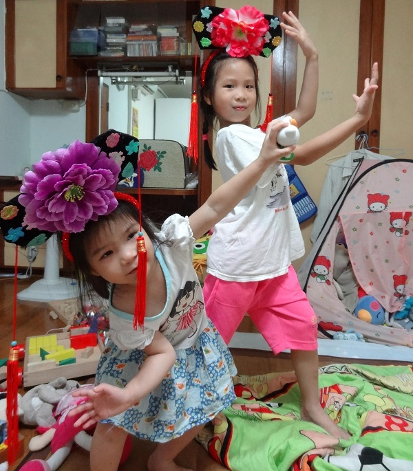

不是饒舌歌，是等待(2017.7) [歌曲下載] 猜猜看，水平在等什麼呢？鉛直又在等什麼呢？
音樂取自 Beethoven Symphony no. 5 remix by Walter Murphy

2017最新女子團體─平拋斜拋
大家好，我們是，平拋斜拋。 我是水平 我是鉛直 為大家帶來我們的第一首主打歌曲~等待 等等等等~~~~ ㄟ，水平，我們在等什麼啊？ 我啊，我在等，速度啊！ 那你呢？鉛直，你在等什麼呢？ 我啊，我在等加速度啊！